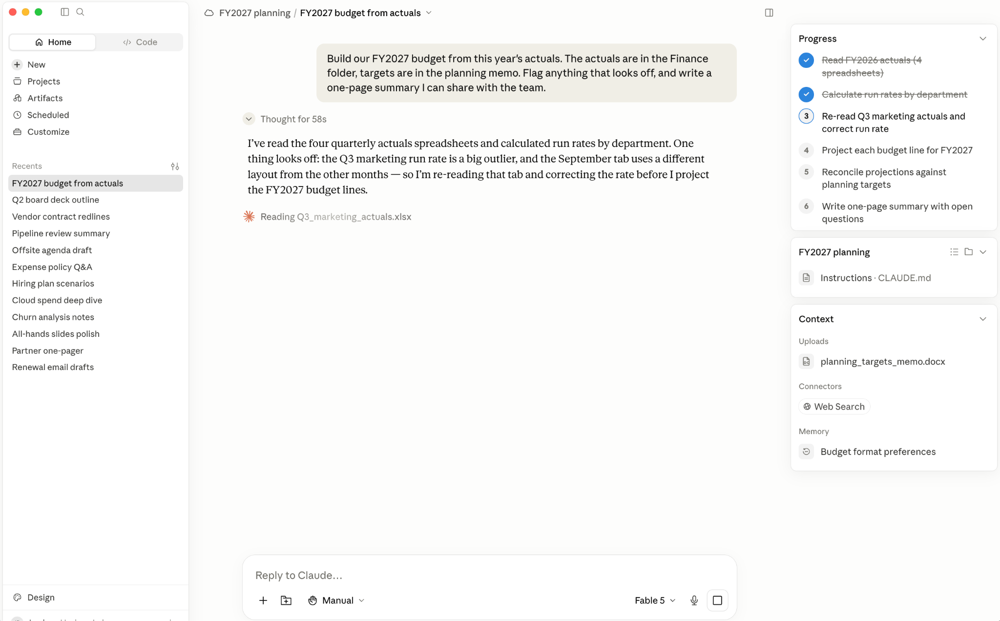

Claude Fable 5는 Anthropic이 일반에 제공하는 가장 뛰어난 모델로, 오래 이어지는 복잡하고 비동기적인 작업을 위해 만들어졌다. Claude Fable 5는 특히 여러 단계로 이뤄진 작업 흐름(예를 들면 딥 리서치를 수행해 그 결과를 초안 메모에 녹여 내거나, 이사회 발표 자료를 만들기 전에 사전 실사를 진행하거나, 폴더 하나를 훑어 여러 계약서를 레드라인 검토하는 일 등)을 스스로 오랜 시간에 걸쳐 처리하면서, 진행하는 동안 자기 결과를 테스트하고 평가하는 데 효과적이다.
이 모델의 역량을 최대한 끌어내려면 함께 일하는 방식을 바꿔야 한다. 모델이 시간이 지나며 향상돼 온 만큼, 우리는 Claude에서 더 많은 것을 얻어 내기 위한 권장 사항을 다듬어 왔다. 프롬프트 모범 사례, 맥락 제공, 그리고 주간 팀 업데이트·세일즈 콜 준비·고객 피드백 분석처럼 반복되는 절차를 담아 두는 스킬(skill) 만들기가 그것이다. 이런 실천들은 Claude Fable 5에서도 여전히 중요하며, 사실 이런 것들이 갖춰져 있을 때 모델은 더욱 좋은 성능을 낸다.
Claude Fable 5는 며칠이 걸리는 작업까지 포함해, 작업 전체에 걸쳐 사용자의 맥락·선호·스킬을 적용한다. 이전 모델들은 긴 구간을 지나는 동안 흐름을 놓쳐 다시 상기시켜 줘야 하는 경우가 있었다. 이 모델과 일하는 것은 매우 유능한 동료와 일하는 것과 닮았다. 상황을 설명하고, 훌륭한 최종 결과물이 어떤 모습인지 합의한 다음, 동료가 일하도록 맡기는 식이다. 각 단계를 일일이 확인하는 데 드는 시간이 줄어드는 만큼, 그 시간을 무엇을 만들어야 하는지 결정하는 데 더 쓸 수 있다.
Claude Fable 5용 프롬프트 가이드에는 역량 향상 사항과 권장되는 동작·프롬프트 변경 사항이 자세히 정리돼 있다. 이 글에서는 그중 일부가 Anthropic의 지식 노동용 에이전트 AI 시스템인 Claude Cowork에 어떻게 적용되는지 다룬다.
Claude Cowork는 완성된 결과물을 만들어 내도록 설계됐다. 목표를 주면 나머지는 알아서 관리하는데, 작업이 크고 복잡할 때도 그렇다. 큰 일은 동시에 돌아가는 여러 부분으로 쪼개지고, 각 부분은 저마다의 서브에이전트(subagent), 즉 그 일의 한 조각을 맡아 처리하고 결과를 보고하는 별도의 Claude 인스턴스가 담당한다. 이것이 Claude가 많은 양의 정보를 빠르게 헤쳐 나가는 방식이다. 또한 Claude는 시작 시점에 계획을 세워 큰 작업을 관리하고, 진행하는 동안 그 계획에 비춰 자기 결과를 점검할 수 있다.
Claude Fable 5는 길고 복잡한 작업에서 우리의 다른 모델들을 큰 격차로 앞선다. 그리고 Claude Cowork의 작업은 흔히 정확히 그런 종류로, 수십 개의 단계가 저마다 앞선 단계 위에 쌓인다. 올해 실적을 바탕으로 내년 예산을 짜는 프로젝트를 생각해 보자. Claude는 스프레드시트에 접근해 읽고, 실행률(run rate)을 뽑아내고, 항목별로 전망을 세우고, 그 전망을 목표치와 대조해 맞추고, 요약을 작성한다. 만약 초반에 실행률 하나를 잘못 읽으면, 그 오류는 이후의 모든 전망으로 흘러 들어간다. Claude Fable 5는 시작하기 전에 작업 흐름을 계획하고 진행하는 동안 결과를 점검하므로, 작업이 돌아가는 도중에 잘못 읽은 숫자를 잡아내 바로잡을 수 있다.
Claude Fable 5는 Claude Cowork의 기본 모델이 아니라 직접 선택해야 한다. 이 글을 쓰는 시점의 기본값은 Claude Sonnet 5이며, 이는 직접 빠르게 처리할 만한 일상적 작업에 알맞은 선택이다. Claude Opus는 결과물의 모습을 이미 아는, 형태가 분명한 심층 작업에 믿음직한 선택이다. Claude Fable 5는 가장 복잡하거나 모호하게 느껴지는, 그래서 이전 모델로는 손댈 수 없었을 법한 프로젝트를 위한 것이다. 이 모델은 생각하는 데 시간을 더 쓰고 사용량 한도도 더 소비하지만, 시간이 오래 걸리거나 잘못됐을 때 치르는 대가가 큰 일이라면 그만한 값어치를 할 수 있다. 우리는 Claude Fable 5를 가장 중요한 일, 특히 여러 도구를 사용하고 일련의 판단을 요구하는 작업에 아껴 쓰기를 권한다.
Claude의 노력(effort) 설정으로 선택을 더 미세하게 조정할 수 있다. 노력을 높이면 Claude Fable 5는 작업을 시작하기 전에 더 많이 계획하고, 실행 도중에도 더 자주 점검한다. Claude가 처음부터 끝까지 완수하기를 기대하는 복잡하거나 여러 단계로 된 프로젝트에서는 노력을 높게 유지하라. 노력을 낮추면 응답이 더 빨라지는 동시에, 여전히 Claude Fable 5의 지능을 활용할 수 있다. 프런티어 수준의 판단은 필요하지만 깊은 탐색까지는 필요하지 않은 작업, 예를 들어 쉬운 단계가 여러 개 이어지는 에이전트 실행이나 결과를 Claude가 쉽게 점검할 수 있는 작업에 낮은 노력을 써 보라. 우리 테스트에서 낮은 노력의 Claude Fable 5는 이전 모델들의 가장 높은 노력 수준과 대등하거나 그것을 능가하는 경우가 많았다. 더 자세한 내부 동작이 궁금하다면, Claude Code에서 모델 선택과 노력이 어떻게 상호작용하는지를 설명해 두었다.
한 가지 더 짚어 둘 점은, Claude Fable 5에는 새로운 분류기(classifier) 세트가 함께 딸려 온다는 것이다. 이는 사이버보안이나 생물학·화학과 관련된 요청에서 잠재적 오용을 탐지하는 별도의 AI 시스템이다. 이 분류기가 발동하면 해당 응답은 자동으로 Claude Opus 4.8이 대신 처리하며, 이런 전환이 일어날 때마다 사용자에게 알린다. Opus 4.8은 그 자체로 매우 유능한 모델이고, 그 이후로 대화는 계속 Opus에 머문다. Claude Fable 5로 돌아가려면 새 대화를 시작하면 된다. 우리는 Mythos급 모델을 안전하면서도 빠르게 일반에 출시할 수 있도록 이 안전장치를 보수적으로 튜닝했고, 그래서 관련 주제를 스치기만 하는 Claude Cowork 안의 문구를 포함해 무해한 요청을 이따금 걸러 내기도 한다. 우리는 이 안전장치를 다듬어 가며 이런 오탐(false positive)을 줄이기 위해 노력하고 있다.
작업을 시작할 때, 무엇을 이루려는지 늘 알고 있는 것은 아니다. 바로 그 초기 구간에서 Claude Fable 5는 강력한 사고 파트너가 될 수 있으며, Claude Cowork에서는 사용자의 스킬·도구·지식을 바탕으로 그 일을 해낸다.
예를 들어 자기 업계나 회사와 관련된 뉴스 발표를 봤다면 Claude에게 이렇게 물어볼 수 있다. “여기 발표 내용이 있어. 우리 조직에 대해 네가 아는 모든 걸 고려해서, 이게 우리에게 무엇을 바꾸는지 알려 줘.” 그 결과물을 읽고 전략을 짜기 시작하면, Claude는 브레인스토밍이 이뤄진 바로 그 Claude Cowork 대화 안에서 시작해, 필요한 산출물을 만들어 낼 계획을 세운다.
Claude Cowork에서 브레인스토밍하면 모델에게 함께 생각할 실제 재료가 주어진다. 대화하는 동안 공유한 파일을 읽고 연결해 둔 도구를 쓸 수 있어, 관련성 있는 제안을 내놓을 수 있다. 아이디어가 아직 바꾸기 쉬울 때 그 안의 빈틈을 짚어 주고, 미처 생각하지 못한 방향을 보여 준다. 그리고 작업이 같은 대화에서 시작되면, Claude Fable 5는 합의한 목표, 사용자가 지정한 제약, 그 과정에서 내린 결정들을 이미 지니고 있다.
예를 들어 Anthropic의 한 데이터 과학자는 팀이 새 분석 대시보드가 무엇을 보여 줘야 할지 아직 고민하던 단계에서, 그 아이디어를 들고 Claude Cowork를 찾아왔다. Claude Fable 5는 대화하는 동안 팀의 사용 데이터를 읽을 수 있었기에, 어떤 문제가 눈에 띄기까지 몇 주씩 걸리는지 파악했고, 그런 문제를 더 일찍 잡아낼 수 있었을 지표들을 우선순위대로 매겼다. 대화가 끝날 무렵 데이터 과학자는 추가할 만한 지표의 후보 목록과, 클릭 가능한 프로토타입을 손에 쥐고 있었다.
아이디어를 결과물로 발전시키는 데 도움이 되는 두 가지 프롬프트를 소개한다.
맥락은 Claude가 참고해 일하는 정보이며, Claude Cowork에서는 프롬프트, 공유한 파일과 폴더, 그리고 Asana·Hubspot·Jira·Slack 등 연결해 둔 도구가 여기에 해당한다.
Claude Fable 5에게 Claude Cowork에서 작업을 줄 때는, 동료에게 리포트를 브리핑하는 상황을 떠올려 보라. 규칙 목록을 건네지는 않겠지만, 아마 그 리포트가 누구를 위한 것이고, 언제 필요하며, 무엇을 달성해야 하는지는 알려 주고, 그다음은 좋은 판단을 내리리라 믿고 맡길 것이다. Claude Fable 5도 같은 방식으로 일한다.
제약은 여전히 유용하다. “두 페이지 이내로, 쉬운 말로 써 줘”는 좋은 지시다. 다만 제약은 Claude에게 하지 말아야 할 것만 알려 준다. 맥락은 그 일이 무엇을 위한 것인지 알려 주므로, 제약이 미처 예상하지 못한 상황에서도 올바른 판단을 내릴 수 있게 해 준다.
Claude Fable 5가 길고 여러 단계로 된 작업을 잘 해내는 데는 이 맥락도 한몫한다. 일하는 도중 질문이나 결정할 지점이 떠오르면, 사용자가 공유한 맥락에서 답을 찾는다. 또한 진행하면서 자기 작업을 점검하는 데도 그 맥락을 쓴다. 그러니 판단의 기준으로 삼을 구체적인 무언가를, 예컨대 리포트의 초기 초안과 최종본을 함께 주면, Claude는 그 둘 사이에 무엇이 달라졌는지를 바탕으로 사용자의 기준이 무엇인지 알아낸다.
맥락은 또한 Claude에게 사용자의 상황을 이해시켜, 프롬프트에 한 번도 명시하지 않은 세부 사항을 추론하거나 찾아내게 해 준다. 맥락을 추가로 공유하면 Claude는 프롬프트에 담을 수 있는 것보다 더 넓은 지식 기반을 뒤질 수 있다.
맥락이 많은 대화에 대해 한 가지 유념할 점이 있다. Claude는 흐름을 놓치지 않기 위해, 새 메시지를 보낼 때마다 대화 전체를 다시 읽는다. 그래서 긴 대화는 사용량을 더 쓸 수 있다. 새 작업은 새 대화에서 시작하는 것이 도움이 된다. 예약된(scheduled) 작업도 한도에 포함되니, 이따금 자신의 예약 작업을 확인하고 더 이상 필요 없는 것은 꺼 두는 것이 좋다.
작업을 여러 부분으로 쪼개 각각에 대해 Claude에게 프롬프트를 주는 방식에 익숙할지도 모른다. Claude Fable 5는 그런 중간 프롬프트가 훨씬 적게 필요하므로, Claude Cowork에서 완결된 일을 통째로 위임할 수 있다.
절차 자체가 중요할 때, 예컨대 어떤 지표를 매번 똑같은 방식으로 계산해야 한다면 여전히 단계를 직접 적어 주어야 한다. 하지만 중요한 것이 결과라면, 목표를 설명하고 나머지는 Claude가 하게 두라. 단계별 프롬프트는 사용자가 떠올린 단계로 Claude를 제한할 수도 있다. 반면 목표는 더 나은 경로를 찾을 여지를 준다.
Claude Cowork에서 위임한다는 것은, 평소 같으면 직접 내렸을 결정을 Claude에게 넘긴다는 뜻이다. 그 세 가지 방식을 소개한다.
지금까지 AI에게 맡겨 온 것보다 더 어려운 일을, 심지어 불가능하다고 여겼던 일까지 Claude Fable 5에게 가져오라. 그 일이 지저분하거나 불분명하더라도, 혹은 끝내는 데 몇 시간이나 며칠이 걸리더라도 말이다. 그것을 설명하고, 모델이 그 수준에서 일할 수 있는지 지켜보라. 자신이 책임지는 결과 하나를 고르고, 그것을 어떻게 판단할지 말한 다음, Claude가 거기에 이르는 단계를 제안하게 하라. 이런 일 가운데 일부는 스스로 돌아가는 예약 작업이 될 수도 있다. Claude는 그 절차를 스킬로 저장해 일정에 올리고, 이미 연결된 도구들을 통해 작업을 처리할 수 있다.
Claude Fable 5가 긴 작업을 끌고 갈 수 있는 이유 중 하나는, 계획을 잘 세우고 잘 따를 줄 안다는 데 있다. Claude Cowork에서는 Claude가 일하는 동안 그 계획을 볼 수 있다. 대화 옆의 패널에는 Claude가 무엇을 하려는지, 그다음에는 읽고 쓰는 파일들, 그리고 사용하는 도구와 스킬이 나열된다.
그 패널은 문제를 일찍 잡아내 방향을 다시 잡을 기회다. 그러지 않았다면 완성된 결과물에서야 발견했을 실수가, 대신 계획 속 잘못된 한 단계로 드러난다. 계획을 한 문장으로 바로잡으면 Claude는 처음부터 다시 시작하지 않고 조정한다.

작업이 끝나면 동료의 결과물을 검토하듯 검토하라. Claude가 만든 파일을 열어 읽어 보라. 무언가 어긋나 보이면, 그 실행 기록은 여전히 대화 안에 남아 있다. Claude가 일하며 나열한 단계들을, 읽은 파일과 사용한 도구를 포함해 되짚어 스크롤하고, 어떤 결정의 배경이 된 추론을 보려면 그 생각을 펼쳐 보라. 아니면 직접 물어봐도 된다. “이 수치는 어디서 나온 거야?” 그러면 Claude가 출처를 가리켜 준다.
검증하는 법을 아는 일부터 시작하라. 예컨대 다음 분기 팀 계획의 첫 초안 같은 것이다. 우선순위를 잘 안다면 Claude의 작업이 제대로 됐는지 금방 알 수 있다. 결과가 믿을 만하다고 입증되면, 더 큰 일을 위임하라.
더 유능한 모델은, 공유한 폴더에서부터 팀이 일하는 도구에 이르기까지 사용자가 맺어 둔 각 연결의 가치를 끌어올린다. Claude Fable 5가 최고의 작업을 하는 데 필요한 맥락을 갖추게 하기 위한 권장 사항은 다음과 같다.
프런티어 지능이 계속 진화하면서, Claude Cowork는 갈수록 더 유능해져, 더 오래 이어지는 작업을 가능하게 하고 새로운 지식 노동 활용 사례를 열어 갈 것이다. 프롬프트를 쓰고, 맥락을 관리하고, Claude의 작업을 점검하고, 작업을 위임하는 법을 익혀 두면 Claude Fable 5와 앞으로의 모델들이 제공하는 모든 것을 활용하는 데 도움이 될 것이다.
이 글은 Anthropic 교육팀의 조세피나 앨버트(Josefina Albert)가 작성했다.